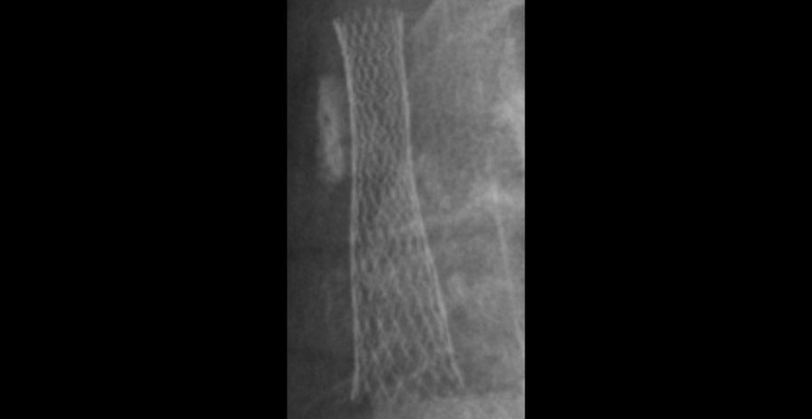

<div class="modalinner">
    <div class="modalheader csheader clearfix">
        <h2>The Accepted Definition of Stent Fracture Types</h2>
    </div>
    <div class="modalcontent cscontent clearfix">
        
    </div>
    <div class="modalfooter csfooter">
        <p class="caption">Carotid Artery Stent</p>
        <div class="slidecount eight">
            <span class="currentslide">2</span> of <span class="totalslides">2</span>
        </div>
        <div class="slider-nav">
            <a href="casestudy4_image1.html" class="right in-reveal">Next</a>
            <a href="casestudy4_image1.html" class="left in-reveal">Previous</a>
        </div>
    </div>
</div>